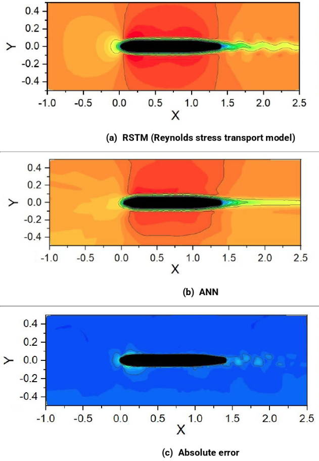

Research
Direct numerical simulation of shock-turbulence interaction
Direct numerical simulation of shock-turbulence interaction.
Drag reduction with anti-turbulence surface
Drag reduction with anti-turbulence surface.
Data driven turbulence modeling with deep neural networks
 Data driven turbulence modeling with deep neural networks.
Data driven turbulence modeling with deep neural networks.
Fast flow field prediction using deep learning

Fast flow field prediction using deep learning.